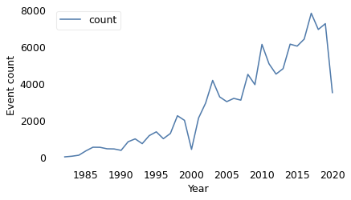
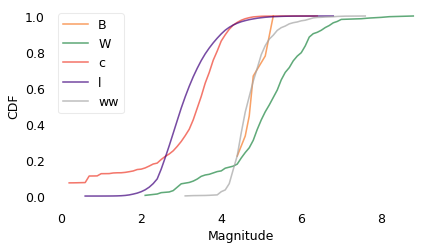
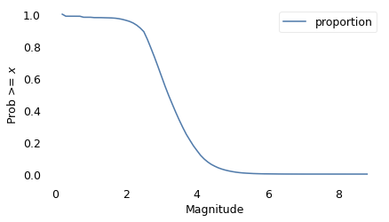
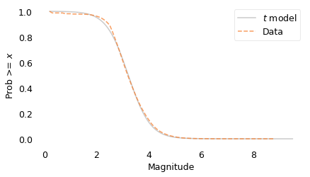
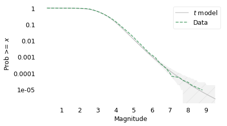
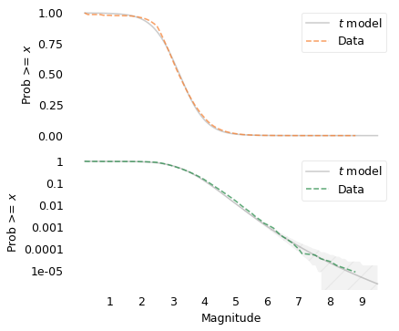

Chile Earthquake Magnitudes#
Exploring the distribution of earthquake magnitudes in Chile using the relocated catalogue from the Centro Sismológico Nacional (CSN), 1982–mid-2020.
Potin et al. (2024), doi:10.1785/0220240047
# Install empiricaldist if we don't already have it
try:
import empiricaldist
except ImportError:
!pip install empiricaldist
from os.path import basename, exists
def download(url):
filename = basename(url)
if not exists(filename):
from urllib.request import urlretrieve
local, _ = urlretrieve(url, filename)
print("Downloaded " + local)
download(
"https://github.com/AllenDowney/ProbablyOverthinkingIt/raw/book/notebooks/utils.py"
)
import pandas as pd
import numpy as np
import matplotlib.pyplot as plt
from empiricaldist import Cdf, Surv
from utils import decorate, set_pyplot_params, make_surv, plot_error_bounds
set_pyplot_params()
Load the catalogue#
Data from Potin et al. (2024): a revised, relocated Chilean seismic catalogue covering 1982 to mid-2020. See chile/chilean_seismic_catalogue-1982-2020-publication_release/README.md for column definitions and citation details.
DATA_DIR = "chile/chilean_seismic_catalogue-1982-2020-publication_release"
SEISMICITY_PATH = f"{DATA_DIR}/CHILE_SEISMICITY_RELOCATED.csv"
data = pd.read_csv(SEISMICITY_PATH)
data["magnitude_type"] = data["magnitude_type"].str.strip()
data.shape
(118004, 13)
data.head()
| # | year | month | day | hour | minute | seconds | longitude | latitude | depth | rms | magnitude | magnitude_type | |
|---|---|---|---|---|---|---|---|---|---|---|---|---|---|
| 0 | 0 | 1982 | 1 | 8 | 0 | 32 | 52.05 | -71.760237 | -32.218361 | 11.7341 | 0.95 | NaN | xx |
| 1 | 1 | 1982 | 1 | 9 | 1 | 6 | 18.81 | -73.147276 | -33.919849 | 5.3619 | 0.86 | NaN | xx |
| 2 | 2 | 1982 | 1 | 9 | 20 | 28 | 47.24 | -70.053573 | -32.952820 | 118.5877 | 0.27 | NaN | xx |
| 3 | 3 | 1982 | 1 | 12 | 15 | 4 | 33.20 | -70.431024 | -32.467427 | 89.8999 | 0.08 | NaN | xx |
| 4 | 4 | 1982 | 1 | 13 | 11 | 20 | 3.02 | -69.627611 | -31.559731 | 46.6019 | 1.49 | NaN | xx |
data.describe(include="all")
| # | year | month | day | hour | minute | seconds | longitude | latitude | depth | rms | magnitude | magnitude_type | |
|---|---|---|---|---|---|---|---|---|---|---|---|---|---|
| count | 118004.00000 | 118004.000000 | 118004.000000 | 118004.000000 | 118004.000000 | 118004.000000 | 118004.000000 | 118004.000000 | 118004.000000 | 118004.000000 | 118004.000000 | 109310.000000 | 118004 |
| unique | NaN | NaN | NaN | NaN | NaN | NaN | NaN | NaN | NaN | NaN | NaN | NaN | 7 |
| top | NaN | NaN | NaN | NaN | NaN | NaN | NaN | NaN | NaN | NaN | NaN | NaN | l |
| freq | NaN | NaN | NaN | NaN | NaN | NaN | NaN | NaN | NaN | NaN | NaN | NaN | 89168 |
| mean | 59001.50000 | 2008.268915 | 6.537863 | 15.628521 | 11.320065 | 29.394961 | 30.028944 | -70.540887 | -29.325809 | 68.141672 | 0.357229 | 3.177608 | NaN |
| std | 34064.96492 | 9.381915 | 3.453024 | 8.782564 | 6.920552 | 17.304747 | 17.315109 | 1.531607 | 5.681583 | 56.104951 | 0.195222 | 0.792424 | NaN |
| min | 0.00000 | 1982.000000 | 1.000000 | 1.000000 | 0.000000 | 0.000000 | 0.000000 | -76.229448 | -45.979579 | -4.954000 | 0.010000 | 0.200000 | NaN |
| 25% | 29500.75000 | 2003.000000 | 4.000000 | 8.000000 | 5.000000 | 14.000000 | 15.050000 | -71.741079 | -33.416475 | 22.039650 | 0.230000 | 2.700000 | NaN |
| 50% | 59001.50000 | 2010.000000 | 6.000000 | 16.000000 | 11.000000 | 29.000000 | 30.070000 | -70.707791 | -31.664178 | 52.116300 | 0.310000 | 3.100000 | NaN |
| 75% | 88502.25000 | 2016.000000 | 10.000000 | 23.000000 | 17.000000 | 44.000000 | 45.010000 | -69.277223 | -23.024681 | 105.557100 | 0.440000 | 3.600000 | NaN |
| max | 118003.00000 | 2020.000000 | 12.000000 | 31.000000 | 23.000000 | 59.000000 | 59.990000 | -64.810972 | -17.817892 | 336.550300 | 2.430000 | 8.800000 | NaN |
Magnitude is reported on several scales (l local, c coda, w and ww moment magnitude). Many early events have no magnitude estimate.
data["magnitude_type"].value_counts()
magnitude_type
l 89168
c 18629
xx 8694
ww 1238
W 265
B 9
1
Name: count, dtype: int64
no_mag = data["magnitude"].isna() | (data["magnitude_type"] == "xx")
no_mag.mean()
0.0736754686281821
Keep events with a valid magnitude for the distribution analysis.
events = data.loc[~no_mag].copy()
events.groupby("magnitude_type")["magnitude"].describe()
| count | mean | std | min | 25% | 50% | 75% | max | |
|---|---|---|---|---|---|---|---|---|
| magnitude_type | ||||||||
| 1.0 | 4.000000 | NaN | 4.0 | 4.0 | 4.0 | 4.0 | 4.0 | |
| B | 9.0 | 4.811111 | 0.329562 | 4.4 | 4.6 | 4.8 | 5.1 | 5.3 |
| W | 265.0 | 5.167170 | 1.093272 | 2.1 | 4.7 | 5.2 | 5.8 | 8.8 |
| c | 18629.0 | 3.108449 | 1.172345 | 0.2 | 2.8 | 3.5 | 3.8 | 6.4 |
| l | 89168.0 | 3.163719 | 0.653422 | 0.6 | 2.7 | 3.1 | 3.5 | 6.8 |
| ww | 1238.0 | 4.780210 | 0.484259 | 3.1 | 4.5 | 4.7 | 5.0 | 7.6 |
The number of events per year has been increasing, which suggests better detection.
events["year"].value_counts().sort_index().plot()
decorate(xlabel="Year", ylabel="Event count")

for mtype, group in events.groupby("magnitude_type"):
Cdf.from_seq(group["magnitude"]).plot(label=mtype)
decorate(xlabel="Magnitude", ylabel="CDF")
plt.legend()
plt.savefig("chile_eda_cdf.png", dpi=300)

The distributions for the different kinds of magnitudes are substantially different. I’m not sure it’s valid to combine them, but for a first pass analysis, that’s what I’m going to do.
mags = events["magnitude"]
mags.describe()
count 109310.000000
mean 3.177608
std 0.792424
min 0.200000
25% 2.700000
50% 3.100000
75% 3.600000
max 8.800000
Name: magnitude, dtype: float64
As expected, there are only a few very large magnitudes.
(mags >= 7).sum(), (mags >= 7.5).sum(), mags.max()
(11, 6, 8.8)
Here’s the tail distribution (fraction of values >= x for all x).
surv = make_surv(mags)
xlabel = "Magnitude"
ylabel = "Prob >= $x$"
surv.plot()
decorate(xlabel=xlabel, ylabel=ylabel)

Fit a Student t#
Find the df parameter that best matches the tail, then the mu and sigma parameters that best match the percentiles.
from scipy.stats import t as t_dist
def truncated_t_sf(qs, df, mu, sigma):
ps = t_dist.sf(qs, df, mu, sigma)
surv_model = Surv(ps / ps[0], qs)
return surv_model
from scipy.optimize import least_squares
def fit_truncated_t(df, surv):
"""Given df, find the best values of mu and sigma."""
low, high = surv.qs.min(), surv.qs.max()
qs_model = np.linspace(low, high, 1000)
# match 20 percentiles from 10th to 99th
ps = np.linspace(0.10, 0.9, 20)
qs = surv.inverse(ps)
def error_func_t(params, df, surv):
mu, sigma = params
surv_model = truncated_t_sf(qs_model, df, mu, sigma)
error = surv(qs) - surv_model(qs)
return error
params = surv.mean(), surv.std()
res = least_squares(error_func_t, x0=params, args=(df, surv), xtol=1e-3)
assert res.success
return res.x
from scipy.optimize import minimize
def minimize_df(df0, surv, bounds=[(1, 1e6)], ps=None):
low, high = surv.qs.min(), surv.qs.max()
qs_model = np.linspace(low, high * 1.0, 2000)
if ps is None:
t = surv.ps[0], surv.ps[-2]
t = 0.1, surv.ps[-2]
low, high = np.log10(t)
ps = np.logspace(low, high, 30, endpoint=False)
qs = surv.inverse(ps)
def error_func_tail(params):
(df,) = params
mu, sigma = fit_truncated_t(df, surv)
surv_model = truncated_t_sf(qs_model, df, mu, sigma)
errors = np.log10(surv(qs)) - np.log10(surv_model(qs))
return np.sum(errors**2)
params = (df0,)
res = minimize(error_func_tail, x0=params, bounds=bounds, tol=1e-3, method="Powell")
assert res.success
return res.x
Search for the value of df that best matches the tail behavior.
df = minimize_df(5, surv, [(1, 1000)])
df
array([8.92478953])
Given that value of df, find mu and sigma to best match percentiles.
mu, sigma = fit_truncated_t(df, surv)
df, mu, sigma
(array([8.92478953]), 3.209750270962042, 0.65453719080302)
Run the model out to magnitude 9.5
low, high = surv.qs.min(), 9.5
qs = np.linspace(low, high, 2000)
surv_model = truncated_t_sf(qs, df, mu, sigma)
On a linear scale:
model_label = "$t$ model"
surv_model.plot(color="gray", alpha=0.4, label=model_label)
surv.plot(color="C1", ls="--", label="Data")
decorate(xlabel=xlabel, ylabel=ylabel)
plt.savefig("chile3.png", dpi=300)

The model fits the data well above magnitude 3.
Now on a log-y scale:
yticks = [1, 0.1, 0.01, 1e-3, 1e-4, 1e-5]
ylabels = yticks
xticks = np.arange(1, 10)
xlabels = xticks
surv_model.plot(color="gray", alpha=0.4, label=model_label)
plot_error_bounds(Surv(surv_model), mags.count(), color="gray", hatch="/")
surv.plot(color="C2", ls="--", label="Data")
decorate(xlabel=xlabel, ylabel=ylabel, yscale="log")
plt.xticks(xticks, xlabels)
plt.yticks(yticks, ylabels)
plt.savefig("chile4.png", dpi=300)

And both together
def plot_two(surv, surv_model, n, hatch=None, title=""):
"""Plots tail distributions on linear-y and log-y scales.
Uses global variables model_label, ylabel, xlabel, xticks, yticks, xlabels, ylabels.
"""
fig, axs = plt.subplots(2, 1, figsize=(6, 5), sharex=True)
plt.sca(axs[0])
surv_model.plot(color="gray", alpha=0.4, label=model_label)
if n < 1000:
plot_error_bounds(Surv(surv_model), n, color="gray")
surv.plot(color="C1", ls="--", label="Data")
decorate(ylabel=ylabel, title=title)
plt.sca(axs[1])
surv_model.plot(color="gray", alpha=0.4, label=model_label)
plot_error_bounds(Surv(surv_model), n, color="gray", hatch=hatch)
surv.plot(color="C2", ls="--", label="Data")
decorate(xlabel=xlabel, ylabel=ylabel, yscale="log")
plt.xticks(xticks, xlabels)
plt.yticks(yticks, ylabels)
plt.tight_layout()
return axs
plot_two(surv, surv_model, mags.count(), hatch="/")
plt.savefig("chile_t_model.png", dpi=300)

The model fits the tail behavior well and makes plausible predictions for very large earthquakes.
Copyright 2026 Allen B. Downey
Example related to Chapter 9 from Probably Overthinking It.
License: Attribution-NonCommercial-ShareAlike 4.0 International (CC BY-NC-SA 4.0)